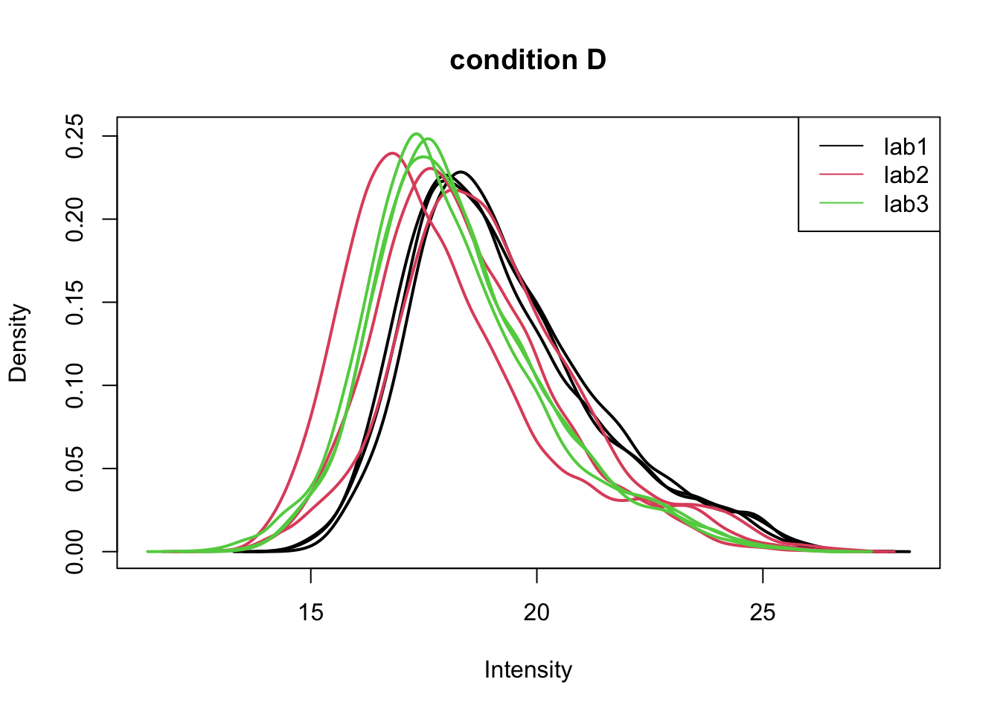
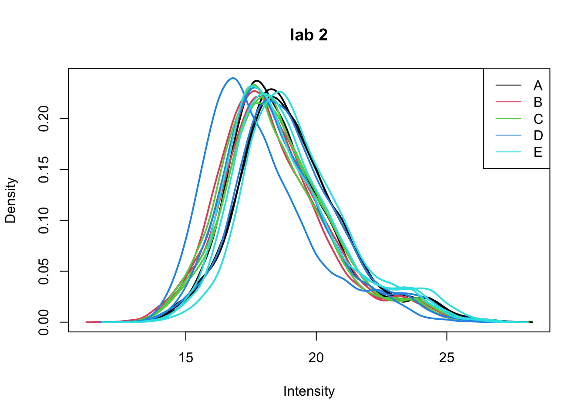
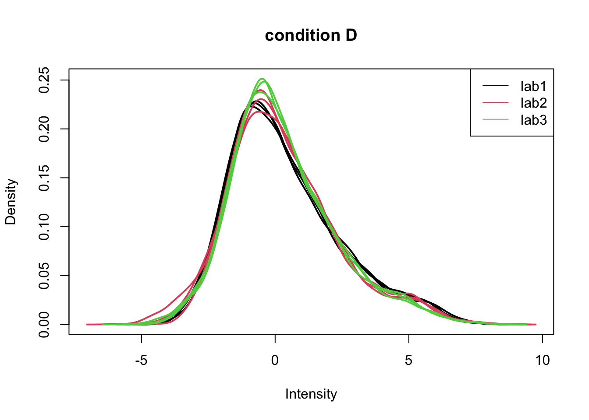
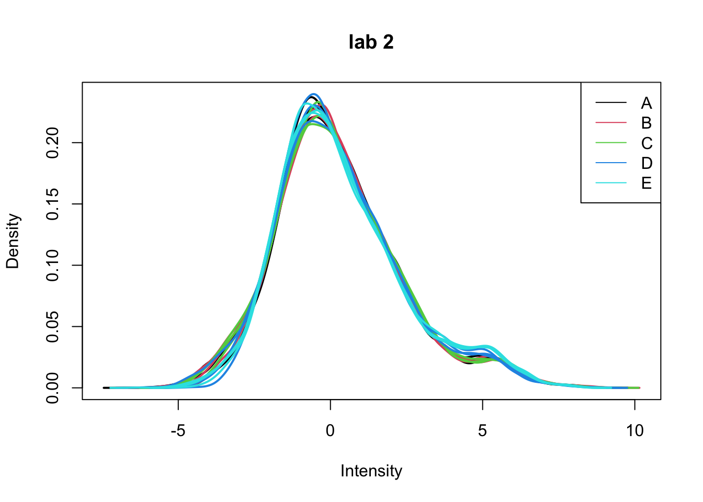
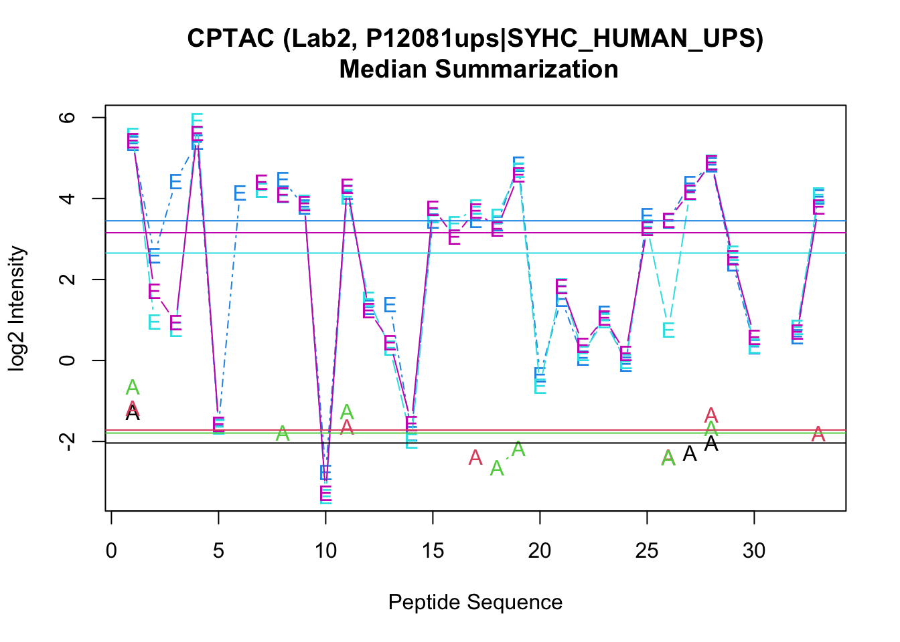

Outline
Introduction
Preprocessing
- Log-transformation
- Filtering
- Normalization
- Summarization
Intro: Challenges in Label-Free Quantitative Proteomics
MS-based workflow

Peptide Characteristics
- Modifications
- Ionisation Efficiency: huge variability
- Identification
- Misidentification \(\rightarrow\) outliers
- MS\(^2\) selection on peptide abundance
- Context depending missingness
- Non-random missingness
\(\rightarrow\) Unbalanced pepide identifications across samples and messy data
Level of quantification
- MS-based proteomics returns peptides: pieces of proteins

- Quantification commonly required on the protein level

Label-free Quantitative Proteomics Data Analysis Workflows

CPTAC Spike-in Study

Same trypsin-digested yeast proteome background in each sample
Trypsin-digested Sigma UPS1 standard: 48 different human proteins spiked in at 5 different concentrations (treatment A-E)
Samples repeatedly run on different instruments in different labs
After MaxQuant search with match between runs option
- 41% of all proteins are quantified in all samples
- 6.6% of all peptides are quantified in all samples
\(\rightarrow\) vast amount of missingness
Preprocessing
Filtering
- Reverse sequences
- Only identified by modification site (only modified peptides detected)
- Razor peptides: non-unique peptides assigned to the protein group with the most other peptides
- Contaminants
- Peptides few identifications
- Proteins that are only identified with one or a few peptides
Filtering does not induce bias if the criterion is independent from the downstream data analysis!
Handling overlapping protein groups
In our approach a peptide can map to multiple proteins, as long as there is none of these proteins present in a smaller subgroup.
pe[["peptideLog"]] <-
pe[["peptideLog"]][rowData(pe[["peptideLog"]])$Proteins
%in% smallestUniqueGroups(rowData(pe[["peptideLog"]])$Proteins),]
Remove reverse sequences (decoys) and contaminants
We now remove the contaminants, peptides that map to decoy sequences, and proteins which were only identified by peptides with modifications.
pe[["peptideLog"]] <- pe[["peptideLog"]][rowData(pe[["peptideLog"]])$Reverse != "+", ]
pe[["peptideLog"]] <- pe[["peptideLog"]][rowData(pe[["peptideLog"]])$
Potential.contaminant != "+", ]
Remove peptides of proteins that were only identified with modified peptides
We skip this step a large protein groups file needed for this.
Drop peptides that were only identified in one sample
We keep peptides that were observed at last twice.
pe[["peptideLog"]] <- pe[["peptideLog"]][rowData(pe[["peptideLog"]])$nNonZero >= 2, ]
nrow(pe[["peptideLog"]])
## [1] 10478
We keep 10478 peptides after filtering.
Normalization
subset <- pe[,colData(pe)$condition=="D"]
limma::plotDensities(
assay(subset[["peptideLog"]]),
col = subset %>% colData %>% as.data.frame %>% pull("lab") %>% as.double,
legend = FALSE,
main = "condition D")
legend("topright",
legend = subset %>% colData %>% as.data.frame %>% pull("lab") %>% levels,
col = subset %>% colData %>% as.data.frame %>% pull("lab") %>% nlevels %>% seq,
lty=1)

subset <- pe[,colData(pe)$lab=="lab2"]
limma::plotDensities(
assay(subset[["peptideLog"]]),
col = subset %>% colData %>% as.data.frame %>% pull("condition") %>% as.double,
legend = FALSE,
main = "lab 2")
legend("topright",
legend = subset %>% colData %>% as.data.frame %>% pull("condition") %>% levels,
col = subset %>% colData %>% as.data.frame %>% pull("condition") %>% nlevels %>% seq,
lty=1)

Even in very clean synthetic dataset (same background, only 48 UPS proteins can be different) the marginal peptide intensity distribution across samples can be quite distinct
Considerable effects between and within labs for replicate samples
Considerable effects between samples with different spike-in concentration \(\rightarrow\) Normalization is needed
Plots of normalized data
subset <- pe[,colData(pe)$condition=="D"]
limma::plotDensities(
assay(subset[["peptideNorm"]]),
col = subset %>% colData %>% as.data.frame %>% pull("lab") %>% as.double,
legend = FALSE,
main = "condition D")
legend("topright",
legend = subset %>% colData %>% as.data.frame %>% pull("lab") %>% levels,
col = subset %>% colData %>% as.data.frame %>% pull("lab") %>% nlevels %>% seq,
lty=1)

subset <- pe[,colData(pe)$lab=="lab2"]
limma::plotDensities(
assay(subset[["peptideNorm"]]),
col = subset %>% colData %>% as.data.frame %>% pull("condition") %>% as.double,
legend = FALSE,
main = "lab 2")
legend("topright",
legend = subset %>% colData %>% as.data.frame %>% pull("condition") %>% levels,
col = subset %>% colData %>% as.data.frame %>% pull("condition") %>% nlevels %>% seq,
lty=1)

Summarization
- We illustrate the summarisation issues using a subset of the cptac study (Lab 2, condition A and E) for a spiked protein (UPS P12081).
subset <- pe[,colData(pe)$lab=="lab2"&colData(pe)$condition %in% c("A","E")]
proteinIntensities <- assay(subset[["peptideNorm"]])[rowData(subset[["peptideNorm"]])$Proteins == "P12081ups|SYHC_HUMAN_UPS",]
matplot(proteinIntensities,
type = "b",
pch = subset %>% colData %>% as.data.frame %>% pull("condition") %>% as.character,
ylab = "log2 Intensity",
xlab = "Peptide Sequence",
main = "CPTAC (Lab2, P12081ups|SYHC_HUMAN_UPS)\n Median Summarization")
abline(h=colMedians(proteinIntensities, na.rm=TRUE),
col=1:6)

- We observe intensities from multiple peptides for each protein in a sample
- Pseudo-replication: peptide intensities from a particular protein in the same sample are correlated, i.e. they more alike than peptide intensities from a particular protein between samples.
- Summarize all peptide intensities from the same protein in a sample into a single protein expression value
- Commonly used methods are mean summarization, median summarization and model based summarization
- We will evaluate different summarization methods in the tutorial session
- Can you anticipate on potential problems related to summarization?
LS0tCnRpdGxlOiAiU3RhdGlzdGljYWwgTWV0aG9kcyBmb3IgUXVhbnRpdGF0aXZlIE1TLWJhc2VkIFByb3Rlb21pY3M6IFBhcnQgSS4gTm9ybWFsaXphdGlvbiBhbmQgU3VtbWFyaXphdGlvbiIKYXV0aG9yOiAiTGlldmVuIENsZW1lbnQiCmRhdGU6ICdgciBmb3JtYXQoU3lzLkRhdGUoKSwgIiVCICVkLCAlWSIpYCcKb3V0cHV0OgogICAgaHRtbF9kb2N1bWVudDoKICAgICAgY29kZV9kb3dubG9hZDogdHJ1ZQogICAgICB0aGVtZTogY29zbW8KICAgICAgdG9jOiB0cnVlCiAgICAgIHRvY19mbG9hdDogdHJ1ZQogICAgICBoaWdobGlnaHQ6IHRhbmdvCiAgICAgIG51bWJlcl9zZWN0aW9uczogdHJ1ZQotLS0KCiMgT3V0bGluZSB7LX0KCjEuIEludHJvZHVjdGlvbgoKMi4gUHJlcHJvY2Vzc2luZwoKICAgIC0gTG9nLXRyYW5zZm9ybWF0aW9uCiAgICAtIEZpbHRlcmluZwogICAgLSBOb3JtYWxpemF0aW9uCiAgICAtIFN1bW1hcml6YXRpb24KICAgIAojIEludHJvOiBDaGFsbGVuZ2VzIGluIExhYmVsLUZyZWUgUXVhbnRpdGF0aXZlIFByb3Rlb21pY3MKCiMjIE1TLWJhc2VkIHdvcmtmbG93CmBgYHtyIGVjaG89RkFMU0V9CmtuaXRyOjppbmNsdWRlX2dyYXBoaWNzKCIuL2ZpZ3VyZXMvUHJvdGVvbWljc1dvcmtmbG93LnBuZyIpCmBgYAogIAotIFBlcHRpZGUgQ2hhcmFjdGVyaXN0aWNzCiAgCiAgLSBNb2RpZmljYXRpb25zCiAgLSBJb25pc2F0aW9uIEVmZmljaWVuY3k6IGh1Z2UgdmFyaWFiaWxpdHkKICAtIElkZW50aWZpY2F0aW9uCiAgICAtIE1pc2lkZW50aWZpY2F0aW9uICRccmlnaHRhcnJvdyQgb3V0bGllcnMKICAgIC0gTVMkXjIkIHNlbGVjdGlvbiBvbiBwZXB0aWRlIGFidW5kYW5jZQogICAgLSBDb250ZXh0IGRlcGVuZGluZyBtaXNzaW5nbmVzcwogICAgLSBOb24tcmFuZG9tIG1pc3NpbmduZXNzCgokXHJpZ2h0YXJyb3ckIFVuYmFsYW5jZWQgcGVwaWRlIGlkZW50aWZpY2F0aW9ucyBhY3Jvc3Mgc2FtcGxlcyBhbmQgbWVzc3kgZGF0YQoKIyMgTGV2ZWwgb2YgcXVhbnRpZmljYXRpb24KCi0gTVMtYmFzZWQgcHJvdGVvbWljcyByZXR1cm5zIHBlcHRpZGVzOiBwaWVjZXMgb2YgcHJvdGVpbnMKCmBgYHtyIGVjaG89RkFMU0V9CmtuaXRyOjppbmNsdWRlX2dyYXBoaWNzKCIuL2ZpZ3VyZXMvY2hhbGxlbmdlc19wZXB0aWRlcy5wbmciKQpgYGAKCi0gUXVhbnRpZmljYXRpb24gY29tbW9ubHkgcmVxdWlyZWQgb24gdGhlIHByb3RlaW4gbGV2ZWwKCmBgYHtyIGVjaG89RkFMU0V9CmtuaXRyOjppbmNsdWRlX2dyYXBoaWNzKCIuL2ZpZ3VyZXMvY2hhbGxlbmdlc19wcm90ZWlucy5wbmciKQpgYGAKCiMjIExhYmVsLWZyZWUgUXVhbnRpdGF0aXZlIFByb3Rlb21pY3MgRGF0YSBBbmFseXNpcyBXb3JrZmxvd3MKCmBgYHtyIGVjaG89RkFMU0V9CmtuaXRyOjppbmNsdWRlX2dyYXBoaWNzKCIuL2ZpZ3VyZXMvcHJvdGVvbWljc0RhdGFBbmFseXNpcy5wbmciKQpgYGAKCiMjIENQVEFDIFNwaWtlLWluIFN0dWR5CgoKYGBge3IgZWNobz1GQUxTRSwgb3V0LndpZHRoPSI2MCUifQprbml0cjo6aW5jbHVkZV9ncmFwaGljcygiLi9maWd1cmVzL2NwdGFjTGF5b3V0THVkZ2VyLnBuZyIpCmBgYAoKLSBTYW1lIHRyeXBzaW4tZGlnZXN0ZWQgeWVhc3QgcHJvdGVvbWUgYmFja2dyb3VuZCBpbiBlYWNoIHNhbXBsZQotIFRyeXBzaW4tZGlnZXN0ZWQgU2lnbWEgVVBTMSBzdGFuZGFyZDogNDggZGlmZmVyZW50IGh1bWFuIHByb3RlaW5zIHNwaWtlZCBpbiBhdCA1IGRpZmZlcmVudCBjb25jZW50cmF0aW9ucyAodHJlYXRtZW50IEEtRSkgCi0gU2FtcGxlcyByZXBlYXRlZGx5IHJ1biBvbiBkaWZmZXJlbnQgaW5zdHJ1bWVudHMgaW4gZGlmZmVyZW50IGxhYnMKLSBBZnRlciBNYXhRdWFudCBzZWFyY2ggd2l0aCBtYXRjaCBiZXR3ZWVuIHJ1bnMgb3B0aW9uCgogIC0gNDFcJSBvZiBhbGwgcHJvdGVpbnMgYXJlIHF1YW50aWZpZWQgaW4gYWxsIHNhbXBsZXMKICAtIDYuNlwlIG9mIGFsbCBwZXB0aWRlcyBhcmUgcXVhbnRpZmllZCBpbiBhbGwgc2FtcGxlcwoKJFxyaWdodGFycm93JCB2YXN0IGFtb3VudCBvZiBtaXNzaW5nbmVzcwoKCiMgUHJlcHJvY2Vzc2luZwoKIyMgTG9nLXRyYW5zZm9ybWF0aW9uCgojIyMgUmVhZCBkYXRhIAoKCmBgYHtyLCB3YXJuaW5nPUZBTFNFLCBtZXNzYWdlPUZBTFNFfQpsaWJyYXJ5KHRpZHl2ZXJzZSkKbGlicmFyeShsaW1tYSkKbGlicmFyeShRRmVhdHVyZXMpCmxpYnJhcnkobXNxcm9iMikKbGlicmFyeShwbG90bHkpCmxpYnJhcnkoZ2dwbG90MikKCnBlcHRpZGVzRmlsZSA8LSAiaHR0cHM6Ly9yYXcuZ2l0aHVidXNlcmNvbnRlbnQuY29tL3N0YXRPbWljcy9QREEyMC9kYXRhL3F1YW50aWZpY2F0aW9uL2NwdGFjL3BlcHRpZGVzLnR4dCIKCmVjb2xzIDwtIGdyZXAoIkludGVuc2l0eVxcLiIsIG5hbWVzKHJlYWQuZGVsaW0ocGVwdGlkZXNGaWxlKSkpCgpwZSA8LSByZWFkUUZlYXR1cmVzKAogIHRhYmxlID0gcGVwdGlkZXNGaWxlLAogIGZuYW1lcyA9IDEsCiAgZWNvbCA9IGVjb2xzLAogIG5hbWUgPSAicGVwdGlkZVJhdyIsIHNlcD0iXHQiKQoKY29sRGF0YShwZSkkbGFiIDwtIHJlcChyZXAocGFzdGUwKCJsYWIiLDE6MyksZWFjaD0zKSw1KSAlPiUgYXMuZmFjdG9yCmNvbERhdGEocGUpJGNvbmRpdGlvbiA8LSBwZVtbInBlcHRpZGVSYXciXV0gJT4lIGNvbG5hbWVzICU+JSBzdWJzdHIoMTIsMTIpICU+JSBhcy5mYWN0b3IKY29sRGF0YShwZSkkc3Bpa2VDb25jZW50cmF0aW9uIDwtIHJlcChjKEEgPSAwLjI1LCBCID0gMC43NCwgQyA9IDIuMjIsIEQgPSA2LjY3LCBFID0gMjApLGVhY2ggPSA5KQpgYGAKCgojIyMgRXhwbG9yZSB0aGUgZGF0YSB3aXRoIHBsb3RzCgpwZXB0aWRlIEFBTEVFTFZLIGZyb20gc3Bpa2VkLWluIFVQUyBwcm90ZWluIFAxMjA4MS4gCldlIG9ubHkgc2hvdyBkYXRhIGZyb20gbGFiMS4KCmBgYHtyfQpzdWJzZXQgPC0gcGVbIkFBTEVFTFZLIixjb2xEYXRhKHBlKSRsYWI9PSJsYWIxIl0KZGF0YS5mcmFtZShjb25jZW50cmF0aW9uID0gY29sRGF0YShzdWJzZXQpJHNwaWtlQ29uY2VudHJhdGlvbiwKICAgICAgICAgICB5ID0gYXNzYXkoc3Vic2V0W1sicGVwdGlkZVJhdyJdXSkgJT4lIGMKICAgICAgICAgICApICU+JSAKICBnZ3Bsb3QoYWVzKGNvbmNlbnRyYXRpb24sIHkpKSArCiAgZ2VvbV9wb2ludCgpICsKICB4bGFiKCJjb25jZW50cmF0aW9uIChmbW9sL2wpIikKYGBgCgoKLSBWYXJpYW5jZSBpbmNyZWFzZXMgd2l0aCB0aGUgbWVhbgokXHJpZ2h0YXJyb3ckIE11bHRpcGxpY2F0aXZlIGVycm9yIHN0cnVjdHVyZSAKCmBgYHtyfQpkYXRhLmZyYW1lKGNvbmNlbnRyYXRpb24gPSBjb2xEYXRhKHN1YnNldCkkc3Bpa2VDb25jZW50cmF0aW9uLAogICAgICAgICAgIHkgPSBhc3NheShzdWJzZXRbWyJwZXB0aWRlUmF3Il1dKSAlPiUgYwogICAgICAgICAgICkgJT4lIAogIGdncGxvdChhZXMoY29uY2VudHJhdGlvbiwgeSkpICsKICBnZW9tX3BvaW50KCkgKyAKICBzY2FsZV94X2NvbnRpbnVvdXModHJhbnM9J2xvZzInKSArIAogIHNjYWxlX3lfY29udGludW91cyh0cmFucz0nbG9nMicpICsKICB4bGFiKCJjb25jZW50cmF0aW9uIChmbW9sL2wpIikgKwogIGdndGl0bGUoImF4ZXMgb24gbG9nIHNjYWxlIikKYGBgCgotIERhdGEgc2VlbXMgdG8gYmUgaG9tb3NjZWRhc3RpYyBvbiBsb2ctc2NhbGUgJFxyaWdodGFycm93JCBsb2cgdHJhbnNmb3JtYXRpb24gb2YgdGhlIGludGVuc2l0eSBkYXRhCgojIyMgbG9nLXRyYW5zZm9ybWF0aW9uIG9mIHRoZSBkYXRhIAoKLSBXZSBjYWxjdWxhdGUgaG93IG1hbnkgbm9uIHplcm8gaW50ZW5zaXRpZXMgd2UgaGF2ZSBmb3IgZWFjaCBwZXB0aWRlIGFuZCB0aGlzIGNhbiBiZSB1c2VmdWwgZm9yIGZpbHRlcmluZy4KCmBgYHtyfQpyb3dEYXRhKHBlW1sicGVwdGlkZVJhdyJdXSkkbk5vblplcm8gPC0gcm93U3Vtcyhhc3NheShwZVtbInBlcHRpZGVSYXciXV0pID4gMCkKYGBgCgoKLSBQZXB0aWRlcyB3aXRoIHplcm8gaW50ZW5zaXRpZXMgYXJlIG1pc3NpbmcgcGVwdGlkZXMgYW5kIHNob3VsZCBiZSByZXByZXNlbnQKd2l0aCBhIGBOQWAgdmFsdWUgcmF0aGVyIHRoYW4gYDBgLgoKYGBge3J9CnBlIDwtIHplcm9Jc05BKHBlLCAicGVwdGlkZVJhdyIpICMgY29udmVydCAwIHRvIE5BCmBgYAoKLSBMb2d0cmFuc2Zvcm0gZGF0YSAKCmBgYHtyfQpwZSA8LSBsb2dUcmFuc2Zvcm0ocGUsIGJhc2UgPSAyLCBpID0gInBlcHRpZGVSYXciLCBuYW1lID0gInBlcHRpZGVMb2ciKQpgYGAKCgoKIyMgRmlsdGVyaW5nCgoKLSBSZXZlcnNlIHNlcXVlbmNlcwotIE9ubHkgaWRlbnRpZmllZCBieSBtb2RpZmljYXRpb24gc2l0ZSAob25seSBtb2RpZmllZCBwZXB0aWRlcyBkZXRlY3RlZCkKLSBSYXpvciBwZXB0aWRlczogbm9uLXVuaXF1ZSBwZXB0aWRlcyBhc3NpZ25lZCB0byB0aGUgcHJvdGVpbiBncm91cCB3aXRoIHRoZSBtb3N0IG90aGVyIHBlcHRpZGVzIAotIENvbnRhbWluYW50cwotIFBlcHRpZGVzIGZldyBpZGVudGlmaWNhdGlvbnMKLSBQcm90ZWlucyB0aGF0IGFyZSBvbmx5IGlkZW50aWZpZWQgd2l0aCBvbmUgb3IgYSBmZXcgcGVwdGlkZXMKCkZpbHRlcmluZyBkb2VzIG5vdCBpbmR1Y2UgYmlhcyBpZiB0aGUgY3JpdGVyaW9uIGlzIGluZGVwZW5kZW50IGZyb20gdGhlIGRvd25zdHJlYW0gZGF0YSBhbmFseXNpcyEKCgojIyMgSGFuZGxpbmcgb3ZlcmxhcHBpbmcgcHJvdGVpbiBncm91cHMKCkluIG91ciBhcHByb2FjaCBhIHBlcHRpZGUgY2FuIG1hcCB0byBtdWx0aXBsZSBwcm90ZWlucywgYXMgbG9uZyBhcyB0aGVyZSBpcwpub25lIG9mIHRoZXNlIHByb3RlaW5zIHByZXNlbnQgaW4gYSBzbWFsbGVyIHN1Ymdyb3VwLgoKYGBge3J9CnBlW1sicGVwdGlkZUxvZyJdXSA8LQogcGVbWyJwZXB0aWRlTG9nIl1dW3Jvd0RhdGEocGVbWyJwZXB0aWRlTG9nIl1dKSRQcm90ZWlucwogJWluJSBzbWFsbGVzdFVuaXF1ZUdyb3Vwcyhyb3dEYXRhKHBlW1sicGVwdGlkZUxvZyJdXSkkUHJvdGVpbnMpLF0KYGBgCgojIyMgUmVtb3ZlIHJldmVyc2Ugc2VxdWVuY2VzIChkZWNveXMpIGFuZCBjb250YW1pbmFudHMKCldlIG5vdyByZW1vdmUgdGhlIGNvbnRhbWluYW50cywgcGVwdGlkZXMgdGhhdCBtYXAgdG8gZGVjb3kgc2VxdWVuY2VzLCBhbmQgcHJvdGVpbnMKd2hpY2ggd2VyZSBvbmx5IGlkZW50aWZpZWQgYnkgcGVwdGlkZXMgd2l0aCBtb2RpZmljYXRpb25zLgoKYGBge3J9CnBlW1sicGVwdGlkZUxvZyJdXSA8LSBwZVtbInBlcHRpZGVMb2ciXV1bcm93RGF0YShwZVtbInBlcHRpZGVMb2ciXV0pJFJldmVyc2UgIT0gIisiLCBdCnBlW1sicGVwdGlkZUxvZyJdXSA8LSBwZVtbInBlcHRpZGVMb2ciXV1bcm93RGF0YShwZVtbInBlcHRpZGVMb2ciXV0pJAogICAgUG90ZW50aWFsLmNvbnRhbWluYW50ICE9ICIrIiwgXQpgYGAKCiMjIyBSZW1vdmUgcGVwdGlkZXMgb2YgcHJvdGVpbnMgdGhhdCB3ZXJlIG9ubHkgaWRlbnRpZmllZCB3aXRoIG1vZGlmaWVkIHBlcHRpZGVzCgpXZSBza2lwIHRoaXMgc3RlcCBhIGxhcmdlIHByb3RlaW4gZ3JvdXBzIGZpbGUgbmVlZGVkIGZvciB0aGlzLgoKIyMjIERyb3AgcGVwdGlkZXMgdGhhdCB3ZXJlIG9ubHkgaWRlbnRpZmllZCBpbiBvbmUgc2FtcGxlCgpXZSBrZWVwIHBlcHRpZGVzIHRoYXQgd2VyZSBvYnNlcnZlZCBhdCBsYXN0IHR3aWNlLgoKYGBge3J9CnBlW1sicGVwdGlkZUxvZyJdXSA8LSBwZVtbInBlcHRpZGVMb2ciXV1bcm93RGF0YShwZVtbInBlcHRpZGVMb2ciXV0pJG5Ob25aZXJvID49IDIsIF0KbnJvdyhwZVtbInBlcHRpZGVMb2ciXV0pCmBgYAoKV2Uga2VlcCBgciBucm93KHBlW1sicGVwdGlkZUxvZyJdXSlgIHBlcHRpZGVzIGFmdGVyIGZpbHRlcmluZy4KCiMjIE5vcm1hbGl6YXRpb24gCgpgYGB7cn0Kc3Vic2V0IDwtIHBlWyxjb2xEYXRhKHBlKSRjb25kaXRpb249PSJEIl0gCgpsaW1tYTo6cGxvdERlbnNpdGllcygKICBhc3NheShzdWJzZXRbWyJwZXB0aWRlTG9nIl1dKSwgCiAgY29sID0gc3Vic2V0ICU+JSBjb2xEYXRhICU+JSBhcy5kYXRhLmZyYW1lICU+JSBwdWxsKCJsYWIiKSAlPiUgYXMuZG91YmxlLAogIGxlZ2VuZCA9IEZBTFNFLAogIG1haW4gPSAiY29uZGl0aW9uIEQiKQoKbGVnZW5kKCJ0b3ByaWdodCIsIAogICAgICAgbGVnZW5kID0gc3Vic2V0ICU+JSBjb2xEYXRhICU+JSBhcy5kYXRhLmZyYW1lICU+JSBwdWxsKCJsYWIiKSAlPiUgbGV2ZWxzLAogICAgICAgY29sID0gc3Vic2V0ICU+JSBjb2xEYXRhICU+JSBhcy5kYXRhLmZyYW1lICU+JSBwdWxsKCJsYWIiKSAlPiUgbmxldmVscyAlPiUgc2VxLAogICAgICAgbHR5PTEpCmBgYAoKCmBgYHtyfQpzdWJzZXQgPC0gcGVbLGNvbERhdGEocGUpJGxhYj09ImxhYjIiXSAKCmxpbW1hOjpwbG90RGVuc2l0aWVzKAogIGFzc2F5KHN1YnNldFtbInBlcHRpZGVMb2ciXV0pLCAKICBjb2wgPSBzdWJzZXQgJT4lIGNvbERhdGEgJT4lIGFzLmRhdGEuZnJhbWUgJT4lIHB1bGwoImNvbmRpdGlvbiIpICU+JSBhcy5kb3VibGUsCiAgbGVnZW5kID0gRkFMU0UsCiAgbWFpbiA9ICJsYWIgMiIpCgpsZWdlbmQoInRvcHJpZ2h0IiwgCiAgICAgICBsZWdlbmQgPSBzdWJzZXQgJT4lIGNvbERhdGEgJT4lIGFzLmRhdGEuZnJhbWUgJT4lIHB1bGwoImNvbmRpdGlvbiIpICU+JSBsZXZlbHMsCiAgICAgICBjb2wgPSBzdWJzZXQgJT4lIGNvbERhdGEgJT4lIGFzLmRhdGEuZnJhbWUgJT4lIHB1bGwoImNvbmRpdGlvbiIpICU+JSBubGV2ZWxzICU+JSBzZXEsCiAgICAgICBsdHk9MSkKYGBgCgoKLSBFdmVuIGluIHZlcnkgY2xlYW4gc3ludGhldGljIGRhdGFzZXQgKHNhbWUgYmFja2dyb3VuZCwgb25seSA0OCBVUFMKcHJvdGVpbnMgY2FuIGJlIGRpZmZlcmVudCkgdGhlIG1hcmdpbmFsIHBlcHRpZGUgaW50ZW5zaXR5IGRpc3RyaWJ1dGlvbgphY3Jvc3Mgc2FtcGxlcyBjYW4gYmUgcXVpdGUgZGlzdGluY3QKCi0gQ29uc2lkZXJhYmxlIGVmZmVjdHMgYmV0d2VlbiBhbmQgd2l0aGluIGxhYnMgZm9yIHJlcGxpY2F0ZSBzYW1wbGVzCi0gQ29uc2lkZXJhYmxlIGVmZmVjdHMgYmV0d2VlbiBzYW1wbGVzIHdpdGggZGlmZmVyZW50IHNwaWtlLWluCmNvbmNlbnRyYXRpb24KJFxyaWdodGFycm93JCBOb3JtYWxpemF0aW9uIGlzIG5lZWRlZAoKIyMjIE1lYW4gb3IgbWVkaWFuPwoKPGRldGFpbHM+PHN1bW1hcnk+IDwvc3VtbWFyeT48cD4KLSBNaWxsZXIgYW5kIEZpc2hraW4gKDE5OTcpIHJlcG9ydGVkIHRoYXQgb3ZlciBhIHBlcmlvZCBvZiAzMCB5ZWFycyBtYWxlcyB3b3VsZCBsaWtlIHRvIGhhdmUgb24gYXZlcmFnZSA2NC4zIHBhcnRuZXJzIGFuZCBmZW1hbGVzIDIuOC4gCjwvcD48L2RldGFpbHM+CgoKPGRldGFpbHM+PHN1bW1hcnk+IDwvc3VtbWFyeT48cD4KLSBNaWxsZXIgYW5kIEZpc2hraW4gKDE5OTcpIHJlcG9ydGVkIHRoYXQgdGhlIG1lZGlhbiBudW1iZXIgb2YgcGFydG5lcnMgc29tZW9uZSB3b3VsZCBsaWtlIHRvIGhhdmUgb3ZlciBhIHBlcmlvZCBvZiAzMCB5ZWFycyBtYWxlcyBpcyAxIGZvciBib3RoIG1hbGVzIGFuZCBmZW1hbGVzLiAKPC9wPjwvZGV0YWlscz4KCjxkZXRhaWxzPjxzdW1tYXJ5PiA8L3N1bW1hcnk+PHA+Ck1lYW4gaXMgdmVyeSBzZW5zaXRpdmUgdG8gb3V0bGllcnMhCgpgYGB7ciBlY2hvPUZBTFNFfQprbml0cjo6aW5jbHVkZV9ncmFwaGljcygiLi9maWd1cmVzL3BhcnRuZXJzLnBuZyIpCmBgYAo8L3A+PC9kZXRhaWxzPgoKIyMjIE5vcm1hbGl6YXRpb24gb2YgdGhlIGRhdGEgYnkgbWVkaWFuIGNlbnRlcmluZwoKYGBge3J9CnBlIDwtIG5vcm1hbGl6ZShwZSwgCiAgICAgICAgICAgICAgICBpID0gInBlcHRpZGVMb2ciLCAKICAgICAgICAgICAgICAgIG5hbWUgPSAicGVwdGlkZU5vcm0iLCAKICAgICAgICAgICAgICAgIG1ldGhvZCA9ICJjZW50ZXIubWVkaWFuIikKYGBgCgojIyMgUGxvdHMgb2Ygbm9ybWFsaXplZCBkYXRhCgpgYGB7cn0Kc3Vic2V0IDwtIHBlWyxjb2xEYXRhKHBlKSRjb25kaXRpb249PSJEIl0gCgpsaW1tYTo6cGxvdERlbnNpdGllcygKICBhc3NheShzdWJzZXRbWyJwZXB0aWRlTm9ybSJdXSksIAogIGNvbCA9IHN1YnNldCAlPiUgY29sRGF0YSAlPiUgYXMuZGF0YS5mcmFtZSAlPiUgcHVsbCgibGFiIikgJT4lIGFzLmRvdWJsZSwKICBsZWdlbmQgPSBGQUxTRSwKICBtYWluID0gImNvbmRpdGlvbiBEIikKCmxlZ2VuZCgidG9wcmlnaHQiLCAKICAgICAgIGxlZ2VuZCA9IHN1YnNldCAlPiUgY29sRGF0YSAlPiUgYXMuZGF0YS5mcmFtZSAlPiUgcHVsbCgibGFiIikgJT4lIGxldmVscywKICAgICAgIGNvbCA9IHN1YnNldCAlPiUgY29sRGF0YSAlPiUgYXMuZGF0YS5mcmFtZSAlPiUgcHVsbCgibGFiIikgJT4lIG5sZXZlbHMgJT4lIHNlcSwKICAgICAgIGx0eT0xKQpgYGAKCgpgYGB7cn0Kc3Vic2V0IDwtIHBlWyxjb2xEYXRhKHBlKSRsYWI9PSJsYWIyIl0gCgpsaW1tYTo6cGxvdERlbnNpdGllcygKICBhc3NheShzdWJzZXRbWyJwZXB0aWRlTm9ybSJdXSksIAogIGNvbCA9IHN1YnNldCAlPiUgY29sRGF0YSAlPiUgYXMuZGF0YS5mcmFtZSAlPiUgcHVsbCgiY29uZGl0aW9uIikgJT4lIGFzLmRvdWJsZSwKICBsZWdlbmQgPSBGQUxTRSwKICBtYWluID0gImxhYiAyIikKCmxlZ2VuZCgidG9wcmlnaHQiLCAKICAgICAgIGxlZ2VuZCA9IHN1YnNldCAlPiUgY29sRGF0YSAlPiUgYXMuZGF0YS5mcmFtZSAlPiUgcHVsbCgiY29uZGl0aW9uIikgJT4lIGxldmVscywKICAgICAgIGNvbCA9IHN1YnNldCAlPiUgY29sRGF0YSAlPiUgYXMuZGF0YS5mcmFtZSAlPiUgcHVsbCgiY29uZGl0aW9uIikgJT4lIG5sZXZlbHMgJT4lIHNlcSwKICAgICAgIGx0eT0xKQpgYGAKCgoKIyMjIFN1bW1hcml6YXRpb24gCgotIFdlIGlsbHVzdHJhdGUgdGhlIHN1bW1hcmlzYXRpb24gaXNzdWVzIHVzaW5nIGEgc3Vic2V0IG9mIHRoZSBjcHRhYyBzdHVkeSAoTGFiIDIsIGNvbmRpdGlvbiBBIGFuZCBFKSBmb3IgYSBzcGlrZWQgcHJvdGVpbiAoVVBTIFAxMjA4MSkuCgpgYGB7cn0Kc3Vic2V0IDwtIHBlWyxjb2xEYXRhKHBlKSRsYWI9PSJsYWIyIiZjb2xEYXRhKHBlKSRjb25kaXRpb24gJWluJSBjKCJBIiwiRSIpXSAKcHJvdGVpbkludGVuc2l0aWVzIDwtIGFzc2F5KHN1YnNldFtbInBlcHRpZGVOb3JtIl1dKVtyb3dEYXRhKHN1YnNldFtbInBlcHRpZGVOb3JtIl1dKSRQcm90ZWlucyA9PSAiUDEyMDgxdXBzfFNZSENfSFVNQU5fVVBTIixdCgptYXRwbG90KHByb3RlaW5JbnRlbnNpdGllcywgCiAgICAgICAgdHlwZSA9ICJiIiwKICAgICAgICBwY2ggPSBzdWJzZXQgJT4lIGNvbERhdGEgJT4lIGFzLmRhdGEuZnJhbWUgJT4lIHB1bGwoImNvbmRpdGlvbiIpICU+JSBhcy5jaGFyYWN0ZXIsCiAgICAgICAgeWxhYiA9ICJsb2cyIEludGVuc2l0eSIsCiAgICAgICAgeGxhYiA9ICJQZXB0aWRlIFNlcXVlbmNlIiwKICAgICAgICBtYWluID0gIkNQVEFDIChMYWIyLCBQMTIwODF1cHN8U1lIQ19IVU1BTl9VUFMpXG4gTWVkaWFuIFN1bW1hcml6YXRpb24iKSAKYWJsaW5lKGg9Y29sTWVkaWFucyhwcm90ZWluSW50ZW5zaXRpZXMsIG5hLnJtPVRSVUUpLAogICAgICAgY29sPTE6NikKYGBgCgotIFdlIG9ic2VydmUgaW50ZW5zaXRpZXMgZnJvbSBtdWx0aXBsZSBwZXB0aWRlcyBmb3IgZWFjaCBwcm90ZWluIGluIGEgc2FtcGxlCi0gUHNldWRvLXJlcGxpY2F0aW9uOiBwZXB0aWRlIGludGVuc2l0aWVzIGZyb20gYSBwYXJ0aWN1bGFyIHByb3RlaW4gaW4gdGhlIHNhbWUgc2FtcGxlIGFyZSBjb3JyZWxhdGVkLCBpLmUuIHRoZXkgbW9yZSBhbGlrZSB0aGFuIHBlcHRpZGUgaW50ZW5zaXRpZXMgZnJvbSBhIHBhcnRpY3VsYXIgcHJvdGVpbiBiZXR3ZWVuIHNhbXBsZXMuIAotIFN1bW1hcml6ZSBhbGwgcGVwdGlkZSBpbnRlbnNpdGllcyBmcm9tIHRoZSBzYW1lIHByb3RlaW4gaW4gYSBzYW1wbGUgaW50byBhIHNpbmdsZSBwcm90ZWluIGV4cHJlc3Npb24gdmFsdWUKLSBDb21tb25seSB1c2VkIG1ldGhvZHMgYXJlIG1lYW4gc3VtbWFyaXphdGlvbiwgbWVkaWFuIHN1bW1hcml6YXRpb24gYW5kIG1vZGVsIGJhc2VkIHN1bW1hcml6YXRpb24KCjEuIFdlIHdpbGwgZXZhbHVhdGUgZGlmZmVyZW50IHN1bW1hcml6YXRpb24gbWV0aG9kcyBpbiB0aGUgdHV0b3JpYWwgc2Vzc2lvbgoyLiBDYW4geW91IGFudGljaXBhdGUgb24gcG90ZW50aWFsIHByb2JsZW1zIHJlbGF0ZWQgdG8gc3VtbWFyaXphdGlvbj8=